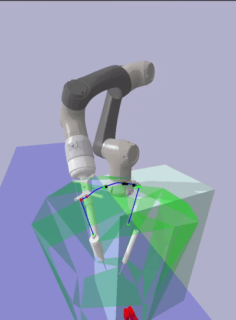
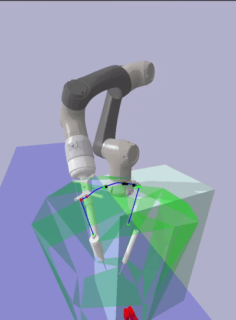
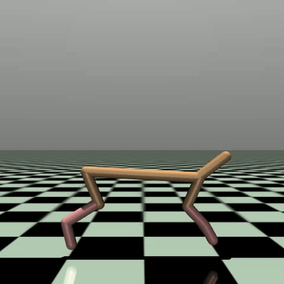
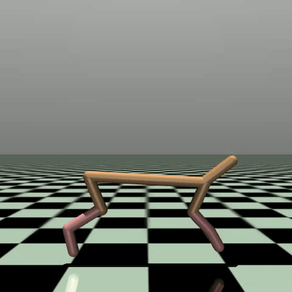
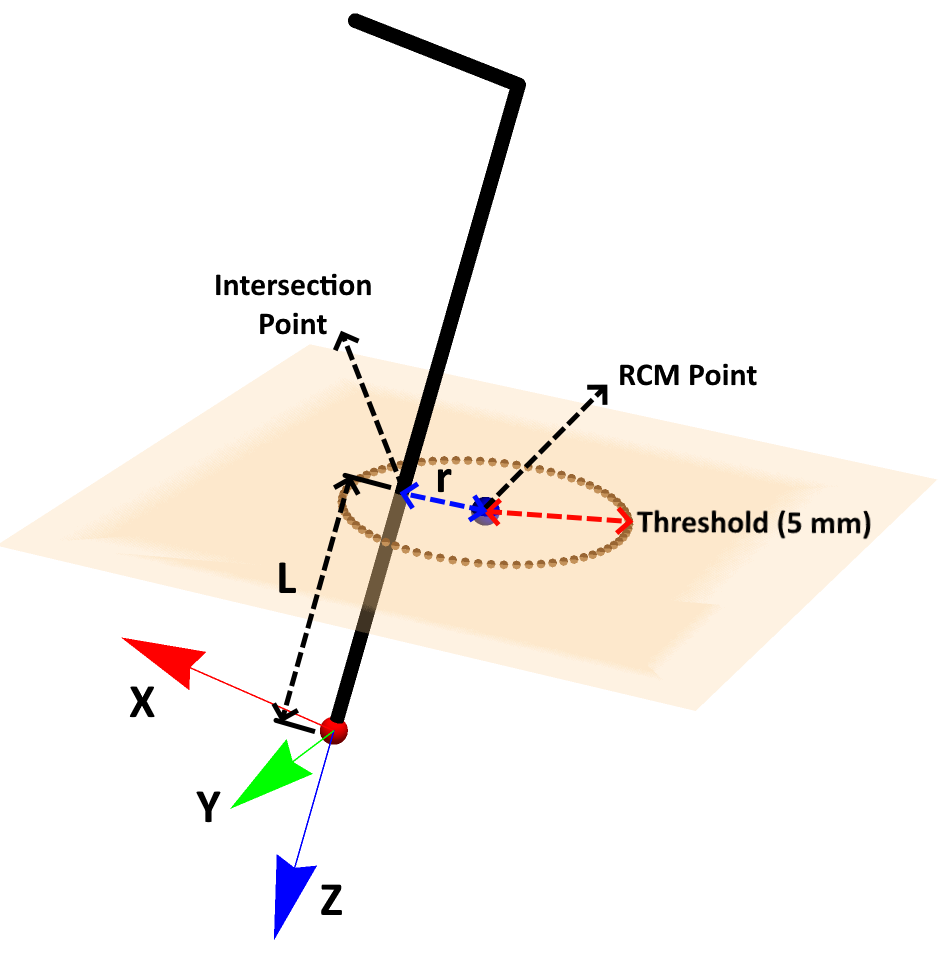

Projects
 

Hybrid-Spine Surgical Motion Planner
Engineered a hybrid motion planner combining geometric and constrained sampling methods for percutaneous interventional spinal procedures.
The motion planner has been tested and validated in a cadaver setting.


Robotic Ultrasound (Autonomous Manupulation)
Developing Reinforcement Learning based image servoving module to detect standard planes in Antenatal Ultrasound systems.


 

Reinforcement Learning Algorithms
Implemention of policy gradient and actor-critic methods for Different OpenAI Gym environments.


Motion Planner for Laproscopy
Implemented constrained motion planner for Remote center of motion(RCM) surgical application such as Laproscopy .